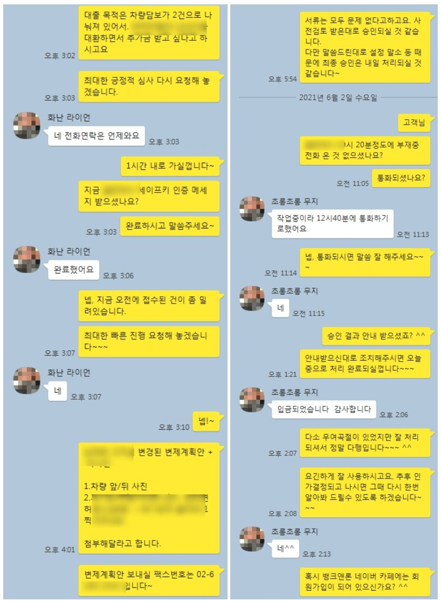

개인회생 개시결정 후 차량담보대출 1500만원 승인 사례
안녕하십니까? 뱅크앤론 조영우 이사입니다~
오늘은 개인회생 인가결정 이전, 개시결정 상황에서 차량담보대출로 1500만원 진행해 드린 사례 공유 드리겠습니다.
해당 고객님의 대략적인 프로필은 아래와 같습니다
- 50세 남성
- 직장인 / 4대가입/ 월급여 220만원
- 기대출 : 캐피탈 600만, 저축은행 500만
개인회생 개시결정을 받으셨고 아직 변제금 납입은 하지 않으신, 인가결정 이전 직장인이셨습니다.
차량담보로 캐피탈과 저축은행에서 받은 대출이 개인회생에 포함되지 않아 별도 채무로 있었고, 이 때문에 일반적으로 최종 인가결정 전까지는 진행이 어려운 상황이셨습니다.
이에 보유하고 계신 차량담보대출 대환하는 조건으로 1500만원 진행드렸고, 기존 대출 2건을 대환하면서 추가 500만원 여유자금을 마련할수 있게 되셨습니다.
아래 내용은 해당 고객님과 실제 나눈 대화내용입니다. 참고 부탁 드리겠습니다~
